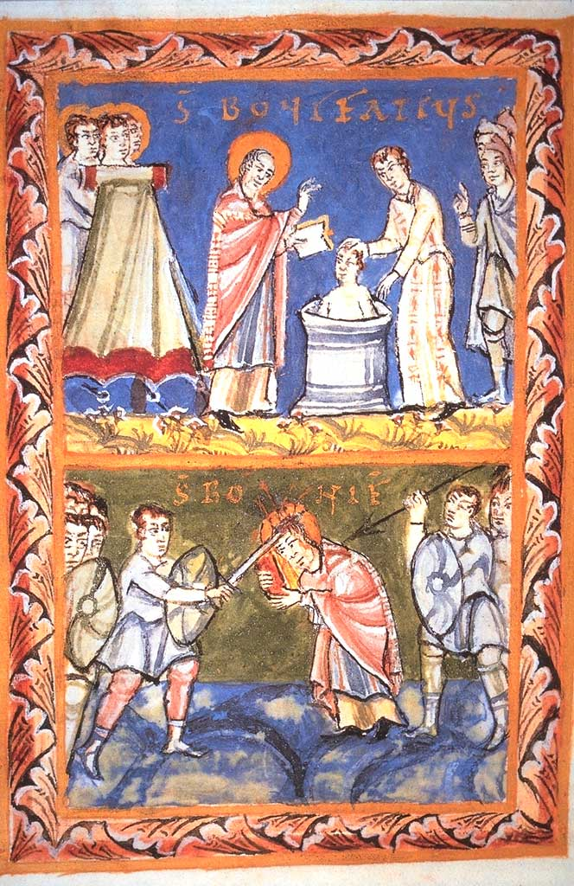
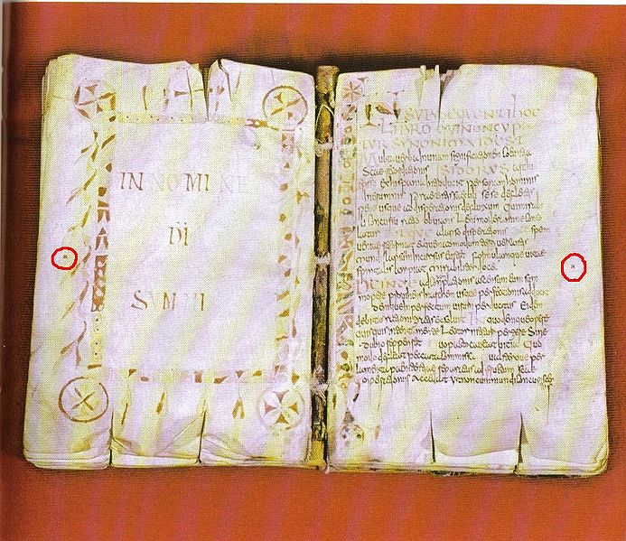

St.
Boniface
Boniface was born in 675 to a noble family in
Anglo-Saxon
England, and was given the name Wynfrith.
He entered a monastery and was ordained a priest at age 30. In 716 he decided to become a
missionary to the Frisians, who lived on the coast of Germany and spoke
a
language that was very similar to Anglo-Saxon, but he soon returned to
England
because of war between the Frankish (Christian) leader Charles Martel
and
the
pagan Frisians. He travelled to
Rome in 722 and obtained the support of the pope for his mession; he
returned
to central Germany in 723, this time also with the support of Charles
Martel,
and had more success. In 732
Boniface went again to Rome and obtained the support of the pope, along
with
the title of archbishop and the authority to consecrate priests and
bishops for
the Germans. For the next 22 years
he destroyed pagan shrines, baptized Christians and set up an
ecclesiastical
hierarchy in Germany, always with the support of the Frankish kings. He was also active in Frankish church
affairs. He never gave up his
dream of converting the Frisians, however, and in 754 he set out on a
new
mission; his group was attacked by a group of bandits and all but one
were
killed. According to a biography
of Boniface written in the 9th century (not this one by Willibald),
Boniface
defended himself with a book that still survives with sword cuts in it.


Left: Fulda Sacramentarium, illustration of
Boniface baptizing and his martyrdom (10th century)
Right: Fulda Landesbibliothek, Codex
Ragyndrudis, supposedly held by Boniface while being martyred
Willibald: the Life of St. Boniface (selections)
After Boniface's death, his followers wanted a
record of
his life and deeds, so Lull, his successor as archbishop of Mainz,
commissioned a biography
from a priest named Willibald.
Willibald was of Anglo-Saxon origin; he had never met Boniface,
but knew
many of his disciples. The
biography was written before 768, thus only a few years after
Boniface's death.
[As a child, Boniface is drawn toward learning
and the
life of a monk. His father, who
wants Boniface to be his heir, tries to dissuade him, but after his
father's
death, Boniface becomes a monk and then a priest; he becomes famous for
his
learning, his ability as a teacher, and his pious lifestyle, and he
becomes
active in politics as a mediator.]
4. . . . . But because a mind intent on God is not elated nor dependent upon the praise and approbation of man, he began carefully and cautiously to turn his mind to other things, to shun the company of his relatives and acquaintances, and to set his heart not on remaining in his native land but on traveling abroad. After long deliberation on the question of forsaking his country and his relatives, he took counsel of Abbot Winbert, of blessed memory, and frankly disclosed to him the plans that up to that moment he had carefully concealed. He importuned the holy man with loud and urgent requests to give his consent to the project, but Winbert, astounded, at first refused to grant his permission, thinking that delay might turn him away from carrying out his proposals. At last, however, the providence of God prevailed and Boniface's petition was granted.
So great was the affection of the abbot and brethren, with whom he had lived under the monastic discipline, that they willingly provided the money for his needs and continued long afterward to pray to God on his behalf: and so he set out upon his journey and, with God's help, safely completed it.
Much strengthened by their spiritual support and liberally supplied with earthly goods, the saint lacked nothing necessary for soul and body. Accompanied by two or three of the brethren on whose bodily and spiritual comfort he depended, he set out on his journey; and after traveling wide stretches of countryside, happy in the companionship of his brethren, he came to a place where there was a market for the buying and selling of merchandise. This place is called Lundenwich [i.e. London] by the Anglo-Saxons even to this day. After a few days, when the sailors were about to embark on their return home, Boniface asked permission of the shipmaster to go on board, and after paying his fare he set sail and came with a favorable winds to Dorestad, where he tarried for a while and gave thanks to God night and day.
But a fierce quarrel that broke out between Charles, the prince and noble leader of the Franks, and Radbod, the king of the Frisians, as a result of a hostile incursion by the pagans, caused great disturbances among the population of both sides, and through the dispersion of the priests and the persecution of Radbod the greater part of the Christian churches, which previously had been subject to Frankish control, were laid waste and brought to ruin. Moreover, the pagan shrines were rebuilt and, what is worse, the worship of idols was restored. When the man of God perceived the wicked perversity of Radbod he came to Utrecht and, after waiting for a few days, spoke with the king, who had also gone there. And having traveled about the country and examined many parts of it to discover what possibility there might be of preaching the Gospel in future, he decided that if at any time he could see his way to approach the people he would minister to them the Word of God. On this purpose of this, his glorious martyrdom many years later set its seal.
[Boniface returns home, but after two years decides to return to the continent. He goes to Rome and meets the pope, who recommends his continuing mission in Germany, and writes letters to the Frankish kings asking for their support. He even returns to Frisia.]
6. . . . . When he had converted to the Lord a vast number of people among the Frisians and many had come through his instruction to the knowledge of the truth, he then traveled, under the protection of God, to other parts of Germany to preach there and in this way came, with the help of God, to the place already mentioned, called Amanburch. Here the rulers were two twin brothers named Dettic and Devrulf, whom he converted from the sacrilegious worship of idols which was practiced under the cloak of Christianity. He turned away also from the superstitions of paganism a great multitude of people by revealing to them the path of right understanding, and induced them to forsake their horrible and erroneous beliefs. When he had gathered together a sufficient number of believers he built a small chapel. Similarly he delivered the people of Hesse, who up to that time had practiced pagan ritual, from the captivity of the devil by preaching the Gospel as far as the borders of Saxony.
[Boniface writes to the pope with questions,
and is
summoned again to Rome. The pope
consecrates him as a bishop, and he returns to Germany.]
. . . . Now many of the Hessians who at that time had acknowledged the Catholic faith were confirmed by the grace of the Holy Spirit and received the laying-on of hands. But others, not yet strong in the spirit, refused to accept the pure teachings of the church in their entirety. Moreover, some continued secretly, others openly, to offer sacrifices to trees and springs, to inspect the entrails of victims; some practiced divination, legerdemain, and incantations; some turned their attention to auguries, auspices, and other sacrificial rites; while others, of a more reasonable character, forsook all the profane practices of the Gentiles [i.e., pagans] and committed none of these crimes.
With the counsel and advice of the latter persons, Boniface in their presence attempted to cut down, at a place called Gaesmere, a certain oak of extraordinary size called in the old tongue of the pagans the Oak of Jupiter. Taking his courage in his hands (for a great crowd of pagans stood by watching and bitterly cursing in their hearts the enemy of the gods), he cut the first notch. But when he had made a superficial cut, suddenly, the oak's vast bulk, shaken by a mighty blast of wind from above crashed to the ground shivering its topmost branches into fragments in its fall. As if by the express will of God (for the brethren present had done nothing to cause it) the oak burst asunder into four parts, each part having a trunk of equal length.
At the sight of this extraordinary spectacle the heathens who had been cursing ceased to revile and began, on the contrary, to believe and bless the Lord. Thereupon the holy bishop took counsel with the brethren, built an oratory from the timber of the oak and dedicated it to Saint Peter the Apostle.
He then set out on a journey to Thuringia, having accomplished by the help of God all the things we have already mentioned. Arrived there, he addressed the elders and the chiefs of the people, calling on them to put aside their blind ignorance and to return to the Christian religion that they had formerly embraced. For, after the authority of their kings came to an end, Theobald and Heden had seized the reins of government. Under their disastrous sway, which was founded more upon tyranny and slaughter than upon the loyalty of the people, many of the counts had been put to death or seized and carried off into captivity, while the remainder of the population, overwhelmed by all kinds of misfortunes, had submitted to the domination of the Saxons. Thus when the power of the leaders, who had protected religion, was destroyed, the devotion of the people to Christianity and religion died out also, and false brethren were brought in to pervert the minds of the people and to introduce among them under the guise of religion dangerous heretical sects. Of these men the chief were Torchtwine, Zeretheve, Eaubercht, and Hunraed, men living in fornication and adultery, whom, according to the apostle, God had already judged (cf. Heb 13:4). These individuals stirred up a violent conflict against the man of God; but when they had been unmasked and shown to be in opposition to the truth, they received a just penalty for their crimes.
[Boniface continues to preach and convert
people. He urges
the reform of the Frankish church. Being
now elderly, he foresees his own
death, and wants to die in the place where he began his preaching,
namely in
Frisia. He sets his affairs in
order, appoints his successors, and departs. He
and his companions baptize many people in Frisia.]
When, as we have already said, the faith had been planted strongly in Frisia and the glorious end of the saint's life drew near, he took with him a picked number of his personal followers and pitched a camp on the banks of the river Bordne, which flows through the territories called Ostor and Westeraeche and divides them. Here he fixed a day on which he would confirm by the laying-on of hands all the neophytes and those who had recently been baptized; and because the people were scattered far and wide over the countryside, they all returned to their homes, so that, in accordance with the instructions laid down by the holy bishop, they could meet together again on the day appointed for their confirmation.
But events turned out otherwise than expected. When the appointed day arrived and the morning light was breaking through the clouds after sunrise, enemies came instead of friends, new executioners in place of new worshipers of the faith. A vast number of foes armed with spears and shields rushed into the camp brandishing their weapons. In the twinkling of an eye the attendants sprang from the camp to meet them and snatched up arms here and there to defend the holy band of martyrs (for that is what they were to be) against the insensate fury of the mob.
But the man of God, hearing the shouts and the onrush of the rabble, straightway called the clergy to his side, and, collecting together the relics of the saints, which he always carried with him, came out of his tent. At once he reproved the attendants and forbade them to continue the conflict, saying: "Sons, cease fighting. Lay down your arms, for we are told in Scripture not to render evil for good but to overcome evil by good. The hour to which we have long looked forward is near and the day of our release is at hand. Take comfort in the Lord and endure with gladness the suffering He has mercifully ordained. Put your trust in Him and He will grant deliverance to your souls." And addressing himself like a loving father to the priests, deacons, and other clerics, all trained to the service of God, who stood about him, he gave them courage, saying: "Brethren, be of stout heart, fear not them who kill the body, for they cannot slay the soul, which continues to live for ever. Rejoice in the Lord; anchor your hope in God, for without delay He will render to you the reward of eternal bliss and grant you an abode with the angels in His heaven above. Be not slaves to the transitory pleasures of this world. Be not seduced by the vain flattery of the heathen, but endure with steadfast mind the sudden, onslaught of death, that you may be able to reign evermore with Christ."
Whilst with these words he was encouraging his disciples to accept the crown of martyrdom, the frenzied mob of pagans rushed suddenly upon them with swords and every kind of warlike weapon, staining their bodies with their precious blood.
Suddenly, after the mortal remains of the just had been mutilated, the pagan mob seized with exultation upon the spoils of their victory (in reality the cause of their damnation) and, after laying waste the camp, carried off and shared the booty; they stole the chests in which the books and relics were preserved and, thinking that they had acquired a hoard of gold and silver, carried them off, still locked, to the ships. Now the ships were stocked with provisions for the feeding of the clerics and attendants and a great deal of wine still remained. Finding this goodly liquor, the pagans immediately began to slake their sottish appetites and to get drunk.
After some time, by the wonderful dispensation of God, they began to argue among, themselves about the booty they had taken and discussed how they were to share the gold and silver they had not even seen. During the long and wordy discussion about the treasure, which they imagined to be considerable, frequent quarrels broke out among them until, in the end, there arose such enmity and discord that they were divided into two angry and frenzied factions. It was not long before the weapons that had earlier murdered the holy martyrs were turned against each other in bitter strife.
After the greater part of the mad freebooters had been slain, the survivors, surrounded by the corpses of their rivals for the booty, swooped down upon the treasure that had been obtained by so much loss of life. They broke open the chests containing the books and found, to their dismay, that they held manuscripts instead of gold vessels, pages of sacred texts instead of silver plate. Disappointed in their hope of gold and silver, they littered the fields with the books they found, throwing some of them into reedy marshes, hiding away others in widely different places. But by the grace of God and through the prayers of the archbishop and martyr St. Boniface the manuscripts were discovered, a long time afterward, unharmed and intact, and they were returned by those who found them to the monastery, in which they are used with great advantage to the salvation of souls even at the present day.
Disillusioned by the loss of the treasure on which they had reckoned, the murderers returned to their dwellings. But after a lapse of three days they were visited with a just retribution for their crimes, losing not only all their worldly possessions but their lives also. For it was the will of the omnipotent Creator and Savior of the world that He should be avenged of His enemies; and in His mercy and compassion He demanded a penalty for the sacred blood shed on His behalf. Deeply moved by the recent act of wicked savagery, He deigned to show the wrath He had concealed so long against the worshipers of idols.
As the unhappy tidings of the martyr's death spread rapidly from village to village throughout the whole province and the Christians learned of their fate, a large avenging force, composed of warriors ready to take speedy retribution, was gathered together and rushed swiftly to their neighbors' frontiers. The pagans, unable to withstand the onslaught of the Christians, immediately took to flight and were slaughtered in great numbers. In their flight they lost their lives, their household goods, and their children. So the Christians, after taking as their spoil the wives and children, men and maidservants of the pagan worshipers, returned to their homes. As a result, the pagans round about, dismayed at their recent misfortune and seeking to avoid everlasting punishment, opened their minds and hearts to the glory of the faith.
* * * * * * * * * *
Taken from:
http://www.fordham.edu/halsall/basis/willibald-boniface.html (see this webpage for copyright
information); source: C. H.
Talbot, The Anglo-Saxon Missionaries in Germany, Being the Lives of SS.
Willibrord,
Boniface, Leoba and Lebuin together with the Hodoepericon of St.
Willibald and
a selection from the correspondence of St. Boniface, (London and New
York:
Sheed and Ward, 1954)
* * * * * * * * * *
Letter from Bishop Daniel of Winchester to
Boniface, on
the Method of Converting The Heathen (723-4)
To Boniface, honoured and beloved leader, Daniel,
servant of
the people of God.
Great is my joy, brother and colleague in the
episcopate,
that your good work has received its reward. Supported by your deep
faith and
great courage, you have embarked upon the conversion of heathens whose
hearts
have hitherto been stony and barren and with the Gospel as your
ploughshare you
have laboured tirelessly day after day to transform them into
harvest-bearing
fields. Well may the words of the prophet be applied to you: "A voice
of
one crying in the wilderness, etc."
Yet not less deserving of reward are they who give
what help
they can to such a good and deserving work by relieving the poverty of
the
labourers, so that they may pursue unhampered the task of preaching and
begetting children to Christ. And so, moved by affection and good will,
I am
taking the liberty of making a few suggestions, in order to show you
how, in my
opinion, you may overcome with the least possible trouble the
resistance of
this barbarous people.
Do not begin by arguing with them about the
genealogies of
their false gods. Accept their statement that they were begotten by
other gods
through the intercourse of male and female and then you will be able to
prove
that, as these gods and goddesses did not exist before, and were born
like men,
they must be men and not gods. When they have been forced to admit that
their
gods had a beginning, since they were begotten by others, they should
be asked
whether the world had a beginning or was always in existence. There is
no doubt
that before the universe was created there was no place in which these
created
gods could have subsisted or dwelt. And by "universe " I mean not
merely heaven and earth which we see with our eyes but the whole extent
of
space which even the heathens can grasp in their imagination. If they
maintain
that the universe had no beginning, try to refute their arguments and
bring
forward convincing proofs; and if they persist in arguing, ask them,
Who ruled
it? How did the gods bring under their sway a universe that existed
before
them? Whence or by whom or when was the first god or goddess begotten?
Do they
believe that gods and goddesses still beget other gods and goddesses?
If they
do not, when did they cease and why? If they do, the number of gods
must be
infinite. In such a case, who is the most powerful among these
different gods?
Surely no mortal man can know. Yet man must take care not to offend
this god
who is more powerful than the rest. Do they think the gods should be
worshipped
for the sake of temporal and transitory benefits or for eternal and
future
reward? If for temporal benefit let them say in what respect the
heathens are
better off than the Christians. What do the heathen gods gain from the
sacrifices if they already possess everything? Or why do the gods leave
it to
the whim of their subjects to decide what kind of tribute shall be
paid? If
they need such sacrifices, why do they not choose more suitable ones?
If they
do not need them, then the people are wrong in thinking that they can
placate
the gods with such offerings and victims.
These and similar questions, and many others that
it would
be tedious to mention, should be put to them, not in an offensive and
irritating way but calmly and with great moderation. From time to time
their
superstitions should be compared with our Christian dogmas and touched
upon
indirectly, so that the heathens, more out of confusion than
exasperation, may
be ashamed of their absurd opinions and may recognise that their
disgusting
rites and legends have not escaped our notice.
This conclusion also must be drawn: If the gods
are
omnipotent, beneficent and just, they must reward their devotees and
punish
those who despise them. Why then, if they act thus in temporal affairs,
do they
spare the Christians who cast down their idols and turn away from their
worship
the inhabitants of practically the entire globe? And whilst the
Christians are
allowed to possess the countries that are rich in oil and wine and
other
commodities, why have they left to the heathens the frozen lands of the
north,
where the gods, banished from the rest of the world, are falsely
supposed to
dwell?
The heathens are frequently to be reminded of the
supremacy
of the Christian world and of the fact that they who still cling to
outworn
beliefs are in a very small minority.
If they boast that the gods have held undisputed
sway over
these people from the beginning, point out to them that formerly the
whole
world was given over to the worship of idols until, by the grace of
Christ and
through the knowledge of one God, its Almighty Creator and Ruler, it
was
enlightened, vivified and reconciled to God. For what does the
baptizing of the
children of Christian parents signify if not the purification of each
one from
the uncleanness of the guilt of heathenism in which the human race was
involved?
It has given me great pleasure, brother, for the
love I bear
you, to bring these matters to your notice. Afflicted though am with
bodily
infirmities, I may well say with the psalmist " I know, O Lord, that
thy
judgment is just and that in truth thou, hast afflicted me." [Ps.
118.75]
For this reason, I earnestly entreat Your Reverence and those with you
who
serve Christ in the spirit, to pray for me that the Lord who made me
taste of
the wine of compunction may quickly aid me unto mercy, that as He has
punished
me justly, so He may graciously pardon and mercifully enable me to sing
in
gratitude the words of the prophet: According to the number of my
sorrows, thy
consolations have comforted my soul." [Ps. 93.19]
I pray for your welfare in Christ, my very dear
colleague,
and beg you to remember me.
* * * * * * * * *
Letter from Boniface to Pope Zacharias
On His Accession to the Papacy (742)
To our beloved lord Zacharias, who bears the insignia of the supreme
pontificate, Boniface, a servant of the servants of God.
We confess, Father and Lord, that after we had learned through
messengers that your predecessor Gregory, of holy memory, had departed
this life, nothing gave us greater comfort and happiness than the
knowledge that God had appointed Your Holiness to enforce the canonical
decrees and govern the Apostolic See. Kneeling at your feet, we
earnestly beg that, as we have been devoted servants and humble
disciples to your predecessors in the See of Peter, we may likewise be
counted obedient servants, under canon law, of Your Holiness.
It is our firm resolution to preserve the Catholic faith and the unity
of the Church of Rome, and I shall continue to urge as many hearers and
disciples as God shall grant me on this mission to render obedience to
the Apostolic See.
We must also inform you, Holy Father, that owing to the conversion of
the German people we have consecrated three bishops and divided the
province into three dioceses. We humbly desire you to confirm and
establish as bishoprics, both by your authority and in writing, the
three towns or cities in which they were consecrated. We have
established one episcopal see in Wurzburg, another in Buraburg and a
third in Erfurt, formerly a city of barbarous heathens. These three
places we urgently beg you to uphold and confirm by a charter embodying
the authority of the Holy See, so that, God willing, there may be in
Germany three episcopal sees founded and established by St. Peter's
word and the Apostolic See's command, which neither present nor future
generations will presume to change in defiance of the authority of the
Apostolic See.
[[several paragraphs on the corrupt clergy of the Frankish church, and
on specific legal cases]]
Because the sensual and ignorant Allemanians, Bavarians and Franks see
that some of these abuses which we condemn are rife in Rome, they think
that the priests there allow them, and on that account they reproach us
and take bad example. They say that in Rome, near the church of
St. Peter, they have seen throngs of people parading the streets at the
beginning of January of each year, shouting and singing songs in pagan
fashion, loading tables with food and drink from morning till night,
and that during that time no man is willing to lend his neighbour fire
or tools or anything useful from his own house. They recount also
that they have seen women wearing pagan amulets and bracelets on their
arms and legs and offering them for sale. All such abuses
witnessed by sensual and ignorant people bring reproach upon us here
and frustrate our work of preaching and teaching. Of such matters
the Apostle says reprovingly: " You have begun to observe special days
and months, special seasons and years. I am anxious over you: has
all the labour I have spent on you been useless? "
And St. Augustine says: "The man who puts his faith in such nonsense as
incantations, fortune-tellers, soothsayers, amulets or prophecies of
any sort, even though he fasts and prays and runs continually to
church, giving alms and doing all kinds of penances, gains nothing as
long as he clings to such sacrilegious practices."
If Your Holiness would put an end to these heathen customs in Rome it
would redound to your credit besides promoting the success of our
teaching of the faith.
Frankish bishops and priests, whose reputation as adulterers and
fornicators was notorious, whose children, born during their episcopate
or priesthood, are living witnesses to their guilt, now declare on
their return from Rome that the Roman Pontiff has granted them full
permission to exercise their offices in the Church. Our answer to
them is that we have never heard of the Apostolic See giving judgment
contrary to the canonical decrees.
All these matters, beloved master, we bring to in order that we may
give these men an authoritative answer and that we, under your guidance
and instruction, overcome an these ravening wolves and prevent the
sheep from being astray.
Finally, we are sending you some small gifts, a warm rug and little
silver and gold. Though they are too trifling to be offered to
Your Holiness, they come as a token of our affection and our devoted
obedience.
May God protect Your Holiness and may you enjoy health and long life in
Christ.
Answers of Pope Zacharias to Boniface
(April 743)
Zacharias, servant of the servants of God, to his very reverend and
holy brother and fellow bishop Boniface.
When we received your letter, most holy brother, which was brought to
us by your priest Denehard, and heard that you were in good health (as
we hope you may always be), we gave thanks to Almighty God who has
deigned to crown your labours with success. Our heart is always filled
with great joy on the receipt, of your letters, because we find in them
reports about the salvation of souls and the conversion of new peoples
through your preaching to our Holy Mother, the Church.
Your latest letter tells us that you have established three bishops in
three separate places to govern the people whom God, through your
intervention, has brought into his fold. You ask that these
episcopal sees may be confirmed by our authority. You should,
however, first consider and carefully examine whether this is advisable
and whether the places and the number of inhabitants warrant the
establishment of bishoprics. You will recall, beloved, that the sacred
canons decree that bishops should not be attached to villages and small
cities lest the dignity of the episcopate be lessened.
However, in response to your earnest appeal we hasten to grant your
request. By our apostolic authority we ordain that bishoprics be fixed
there and that a worthy succession of bishops shall govern the people
and instruct them in the faith: there shall be one in the
fortress called Wurzburg, a second in the town of Buraburg and a third
in the place called Erfurt. Let no one dare to violate in the
future what we have laid down and confirmed by the authority of the
blessed Apostle Peter.
[[responses about ecclesiastical discipline and court cases]]
As regards the New Year celebrations, auguries, amulets, incantations
and other practices, which you say are observed in pagan fashion at the
church of St. Peter, the Apostle, or in the city of Rome, we consider
them to be sinful and pernicious not only for us but for all
Christians, according to God's word in the Scriptures: "Jacob needs no
soothsayer, Israel no divination: time will reveal the marvellous
things God does to them." We consider also that auguries and
divinations should be avoided, for we have been taught that such
practices were repudiated by the Fathers. Because these evils
were cropping up again, we strove to abolish them from the very outset
of our pontificate, when by divine favour we were elected to fill the
place of the Apostle. We desire you to instruct your people on
the same lines and so lead them to eternal life. All such practices
were conscientiously and thoroughly suppressed by our predecessor and
teacher, Gregory of sacred memory, together with many others, which, on
the instigation of the devil, were beginning to make their appearance
in the fold of Christ.
In fulfilment of your request, we are sending separate letters of
confirmation to each of your three bishops and we ask you to deliver
them with your own hand.
We have sent letters also to our son Carloman urging him to carry out
his promises at the earliest possible opportunity and to give you his
support.
These, beloved brother, are our answers to the enquiries you made
previously, given as God has inspired us for the suppression of all the
scandals and deceits of the devil. If other disorders arise among your
people, do your best to counteract them, framing your decisions on the
laws of the Church. We have no right to teach anything except the
traditions of the Fathers, but if some new situation arises through the
wiles of the devil and no solution is suggested in the provisions of
the Church canons do not hesitate to refer the matter to us, so that
with God's help we may quickly give you an answer and attend to the
wellbeing of your newly converted people.
Be assured that you have a special place in our affections and that it
would give us great pleasure to have you always by our side as a
minister of God in charge of the churches of Christ.
Finally, beloved brother, take strength in God. Persevere manfully in
the work to which God, in His mercy, has called you; for the great
reward which God has promised to all those who love Him awaits
you. And sinners though we are, we will never cease to implore
Him to bring to perfection the generosity He has inspired in you.
May blessed Peter, Prince of the Apostles, assist you in everything
which you do in obedience to Him to the best of your desire.
May God keep you safe, most reverend and holy father.
Given on the kalends of April in the 24th year of our pious and august
lord Constantine, by God crowned Emperor, in the second year of his
consulship, in the eleventh indiction.
* * * * * * * * *
Taken from:
http://www.fordham.edu/halsall/basis/boniface-letters.html